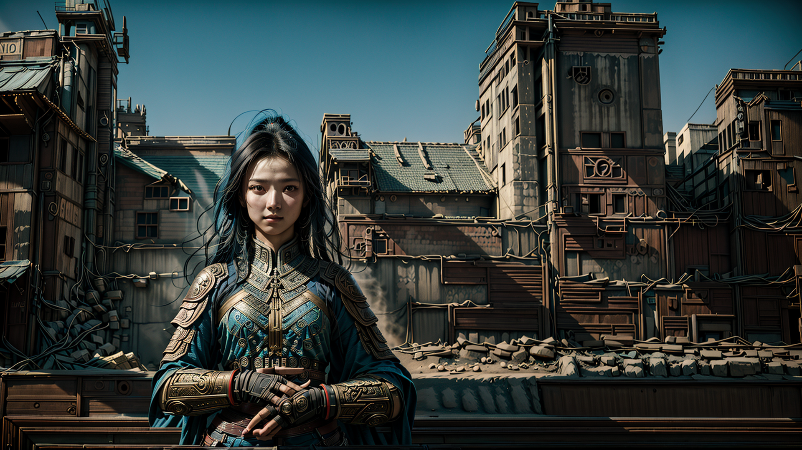
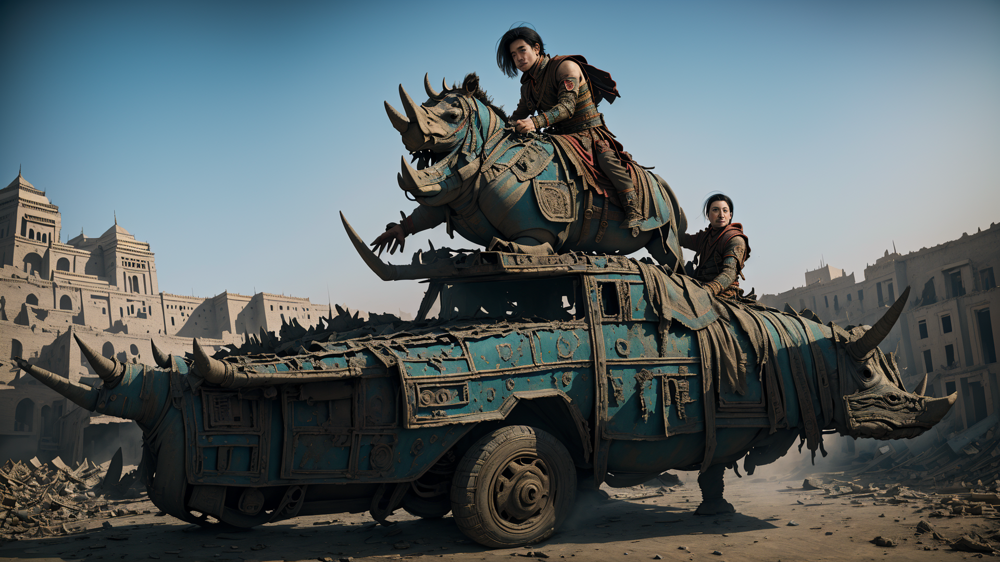

Fantasy
Eine intensive und dramatische Atmosphäre in einer düsteren, futuristischen Welt
Der Künstler vermittelt durch die Serie ein Gefühl von Überleben und Widerstand in einer dystopischen Zukunft. Die bedrückende Atmosphäre, kombiniert mit der futuristischen Ästhetik, reflektiert eine Welt, in der das Individuum gegen eine kalte und bedrohliche Umgebung ankämpfen muss.
Die Bildkomposition lenkt den Blick des Betrachters immer wieder auf die Frau, was ihre zentrale Rolle und Dominanz in dieser harschen Welt unterstreicht. Die Spannung und Dramatik in jedem Bild fesseln den Betrachter und lassen ihn die Ungewissheit und die ständige Bedrohung spüren, die in dieser Zukunftswelt allgegenwärtig sind.
Insgesamt zeigt die Serie nicht nur eine visuell beeindruckende Darstellung einer dystopischen Welt, sondern auch die innere Stärke und Entschlossenheit des menschlichen Geistes, sich gegen alle Widrigkeiten zu behaupten.
Alle Personen und Kulissen sind fiktiv. Alle Bilder sind KI generiert.
Der Künstler vermittelt durch die Serie ein Gefühl von Überleben und Widerstand in einer dystopischen Zukunft. Die bedrückende Atmosphäre, kombiniert mit der futuristischen Ästhetik, reflektiert eine Welt, in der das Individuum gegen eine kalte und bedrohliche Umgebung ankämpfen muss.
Die Bildkomposition lenkt den Blick des Betrachters immer wieder auf die Frau, was ihre zentrale Rolle und Dominanz in dieser harschen Welt unterstreicht. Die Spannung und Dramatik in jedem Bild fesseln den Betrachter und lassen ihn die Ungewissheit und die ständige Bedrohung spüren, die in dieser Zukunftswelt allgegenwärtig sind.
Insgesamt zeigt die Serie nicht nur eine visuell beeindruckende Darstellung einer dystopischen Welt, sondern auch die innere Stärke und Entschlossenheit des menschlichen Geistes, sich gegen alle Widrigkeiten zu behaupten.
Alle Personen und Kulissen sind fiktiv. Alle Bilder sind KI generiert.


